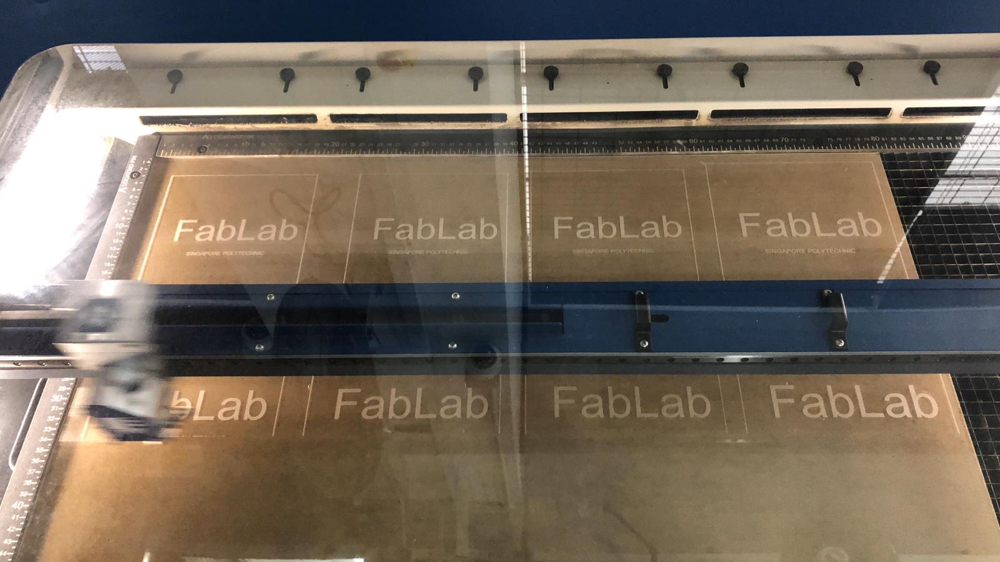
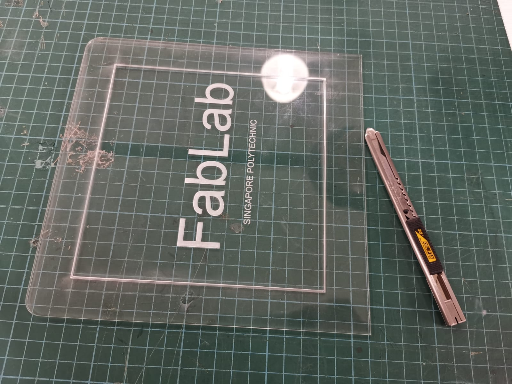

To laser cut, we have to export our line drawing file as .dxf before opening in CorelDraw.
CorelDRAW is used to change the colour of the drawing lines where red is cut and green
is engrave. After the changes have been made, it is then sent to the laser cutting
machine to cut.
laser cutting process
A single piece of the light.
